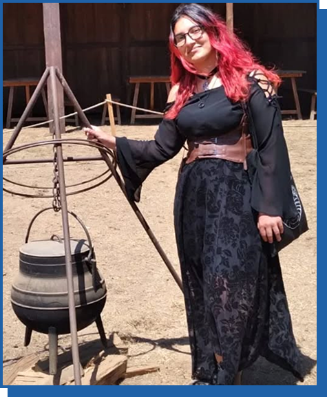
Analista de Desenvolvimento de Software com formação em Desenvolvimento de Software Multiplataforma pela Fatec Jacareí.
Profissional em desenvolvimento de software com experiência em arquitetura de sistemas, Clean Architecture e metodologias ágeis. Especializada em prototipação com foco em UX/UI e desenvolvimento full-stack.
Desenvolvedora de Software com formação em Desenvolvimento de Software Multiplataforma pela Fatec Jacareí. Atualmente trabalho como Analista de Desenvolvimento de Software na 1000 Valle Multimarcas, desenvolvendo sistemas escaláveis com arquitetura limpa e boas práticas de engenharia.
Com experiência prática em prototipação com foco em usabilidade, desenvolvimento full-stack (frontend, backend e banco de dados), e metodologias ágeis. Atuei como monitora de Algoritmos e Lógica de Programação, auxiliando colegas com conceitos fundamentais de programação.
Minhas habilidades abrangem desde a concepção de protótipos usando fundamentos de UX/UI até a implementação completa, arquitetura de sistemas, Clean Architecture, SOLID principles, e liderança de equipes em ambiente ágil.
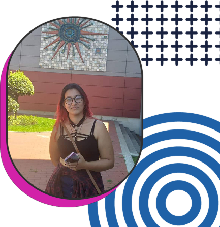
1000 Valle Multimarcas
abr de 2026 · 2 meses
Desenvolvimento de sistema CRM em TypeScript com arquitetura baseada em Clean Architecture, voltado para gestão de leads, atendimento comercial, negociações e integrações externas. Estruturação de regras de negócio, criação de APIs, organização em camadas, controle de permissões, distribuição de leads e integrações com WhatsApp. Participação ativa na modelagem técnica e evolução de módulos escaláveis.
Competências: Clean Architecture, TypeScript, Backend, Frontend
1000 Valle Multimarcas
abr de 2025 · 1 ano 2 meses
Prototipação de telas com foco em usabilidade e experiência do usuário (UX/UI). Modelagem e estruturação de banco de dados relacional. Desenvolvimento de backend utilizando princípios SOLID e Clean Architecture para separação de responsabilidades e manutenibilidade.
Competências: Gestão de Projetos, Clean Architecture, UX/UI, Banco de Dados
Gen Apps
ago de 2023 - mar de 2025 · 1 ano 8 meses
Desenvolvimento de aplicações web e móveis. Criação de protótipos de aplicações colaborando com a equipe para aprimorar a experiência do usuário. Contribuição no ciclo completo de desenvolvimento, desde a concepção até a implementação de novas funcionalidades com foco em qualidade e eficiência. Trabalho em equipe com metodologia ágil.
Competências: Desenvolvimento Frontend, Desenvolvimento Backend, Aplicações Móveis, Metodologia Ágil
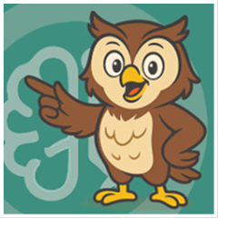
Aplicação inteligente de assistente virtual baseada em IA com suporte a perguntas em linguagem natural e respostas personalizadas por personagem. Guia oferece acesso como convidado ou via login social (Google/Apple), avatar animado interativo, respostas adaptadas ao tom/estilo escolhido, acessibilidade em Libras e modo de alto contraste, além de gerenciamento de eventos favoritos com lembretes e controle de dados pessoais conforme LGPD.
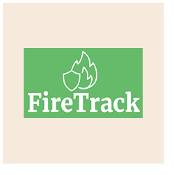
Sistema inteligente de análise e monitoramento de cicatrizes de queimadas em imagens de satélite. FireTrack permite iniciar processamentos de imagens, visualizar resultados filtrados, selecionar candidatas para análise, acompanhar status em tempo real e visualizar os resultados em um mapa interativo com possibilidade de download dos vetores classificados para análise offline.
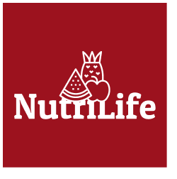
Aplicação de controle e acompanhamento calórico de forma interativa e dinâmica com implementação de IoT para contagem de passos. NutriLife tem por objetivo ser uma ferramenta para uma alimentação mais saudável, levando em conta o público-alvo abrangente. Sua interface reflete isso, sendo de fácil utilização e com mecanismos visuais abrangentes.
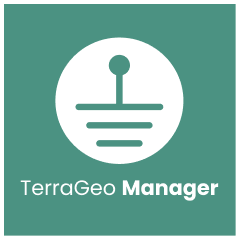
TerraGeo Manager tem como objetivo ser uma interface visual e interativa para gerenciamento de equipes que fazem mapeamento geoespacial, gerando estatísticas sobre o desenvolvimento do projeto e aqueles que trabalham neles. Facilitando o gerenciamento para gestores da equipe e possibilitando a fácil visualização da produtividade de projetos e membros.
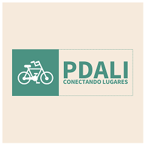
Um aplicativo web peer-to-peer para conectar proprietários e pessoas interessadas em alugar bicicletas. A aplicação faz a intermediação entre as partes, com filtros para facilitação de busca, avaliação de produto e usuário, além de interface de fácil utilização.
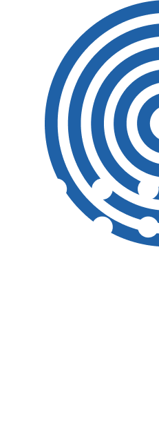
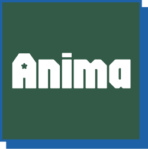
Anima é um projeto para a criação de uma comunidade de concepção e compartilhamento de críticas e avaliações focada em animações orientais, mas com foco em fãs brasileiros e falantes da língua portuguesa. O design foi projetado para ser de fácil utilização sem perder o lúdico do universo das animações ao qual é inspirado.
Ver LayoutLibre é a simulação de um catálogo online para uma biblioteca. Sua intenção é que seja uma interface online para o que se encontraria na própria biblioteca, sendo possível fazer buscas por categorias, títulos ou autores. O layout é focado em simular algo antigo, mas sem perder a praticidade do novo.
Ver Layout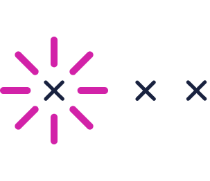
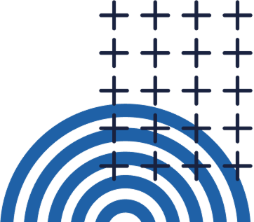
Centro Paula Souza
Emitida em set de 2025
Desenvolvimento de aplicativos móveis
Centro Paula Souza
Emitida em mai de 2025
Desenvolvimento de back-end
Centro Paula Souza
Emitida em mai de 2025
Experiência do usuário (UX)
Centro Paula Souza
Emitida em mai de 2025
Padrões de design
Centro Paula Souza
Emitida em jan de 2025
Desenvolvimento de front-end
Centro Paula Souza
Emitida em jan de 2025
Desenvolvimento de front-end
TOEIC Brasil
Emitido em jun de 2024
ESL (Inglês como segunda língua)